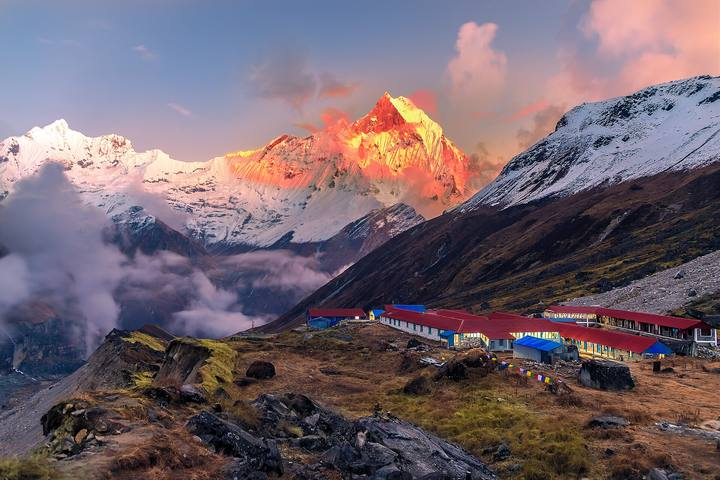

Ghandruk Loop
Three or four easy days below Annapurna South: up to Ghandruk, across the Modi Khola to Landruk and Tolka, over a forested saddle to Dhampus and down the stone steps to Phedi.
- Duration
- 3–5 days
- Distance
- 24 kmapproximate
- Highest point
- 2,100 mPitam Deurali · 6,890 ft
- Highest night
- 1,940 mGhandruk
- Difficulty
- EasyTeahouse lodges
- Best months
- Mar–Apr, Oct–Dec
Is this trek right for me?
The walking
4 days in all. Most walking days are 1 to 2 hours on foot, and the longest is about 5 hours. Short days below 3,500 m on good paths. Fine for a first trek.
The height
You never sleep above 1,940 m, so altitude is not a worry on this trek.
Where you sleep
In lodges every night: a simple twin room, a shared bathroom and hot meals in a warm dining room.
The help you need
The rules require a licensed guide on this route. A porter to carry your bag is your choice.
Overview
This is the short village circuit closest to the big mountains. It links Ghandruk, the best-known Gurung village in the country, with Landruk and Tolka on the opposite side of the Modi Khola, then crosses a forested saddle at 2,100 m to Pothana and Dhampus. For most of the way Annapurna South and Hiunchuli fill the head of the valley and Machhapuchhre stands to the right of them. You sleep below 2,000 m every night, so altitude is not a concern.
The walking days are short, between one and five hours, on old stone-paved trails. The catch is the steps. Ghandruk and Landruk face each other across a deep valley, and the only way between them on foot is down about 650 m of stone staircase to a suspension bridge and up the other side. The last morning drops another 500 m from Dhampus to the highway. Fit knees and two poles matter more here than strong lungs.
Lodges on this loop are among the most comfortable in the hills, with attached bathrooms in many, hot showers and long menus, because every stop is on a main trekking route. Roads are close too. Jeep tracks reach Ghandruk, Landruk, Tolka and Dhampus, so any day can be shortened or dropped, and a walker who has had enough can be back in Pokhara the same afternoon. The plan below rides to Kimche and keeps the rest on foot.
Highlights
- Ghandruk's slate-roofed houses and Gurung museum
- Annapurna South, Hiunchuli and Machhapuchhre at the head of the valley
- The suspension bridge over the Modi Khola between Ghandruk and Landruk
- Oak and rhododendron forest over the saddle at Pitam Deurali
- Sunrise on the Annapurna range from Dhampus
- A road within reach on every day
Easy: Low altitude, short days and good lodges; what tests you is stone steps, above all the 650 m drop from Ghandruk to the Modi Khola and the climb back out.
Altitude profile
Height at the end of each day, with the high points in between. Dots are the places you sleep.
Low altitude risk. You never sleep above 3,000 m on this itinerary, so altitude illness is unlikely. Mild headaches and breathlessness on the climbs are still normal.
Day by day
About 10–14 h of walking in total. Times are for a steady pace with short breaks; add more for photos and tea.
-
Day1
Drive to Kimche, walk up to Ghandruk
About three hours by jeep or bus through Nayapul and Birethanti, where permits are checked. From Kimche an hour of stone steps climbs 300 m between terraces to the village. Jeeps also go on to the stand at the foot of Ghandruk, a short walk below the lodges. Keep the afternoon for the old upper village and the museum.
61 places to stay in Ghandruk, such as Annapurna Guesthouse, Annapurna Guesthouse Restaurant And Bar and Hotel Gurkhas Villa. See them
- Sleep at
- 1,940 m
- Change
- +300 m
- Walking
- 1–2 h
-
Day2
Ghandruk to Tolka by Landruk
The day of steps. Go down about 650 m of stone staircase to the suspension bridge over the Modi Khola, an hour to an hour and a half, then climb 270 m to Landruk for lunch. Tolka is another hour along the hillside, partly on the jeep track. Leave early so that the climb out of the valley is done before midday.
6 places to stay in Tolka, such as Hira Lodge, Sunny Guesthouse and International Guesthouse. See them
- Sleep at
- 1,700 m
- Change
- −240 m
- Walking
- 4–5 h
-
Day3
Tolka to Dhampus over Pitam Deurali
Tolka to Pitam Deurali to Pothana to Dhampus
A steady climb of 400 m through oak and rhododendron forest to the saddle at Pitam Deurali, an hour and a half to two hours. From there it is downhill: forty minutes to Pothana, where permits are checked, and an hour or more on a wide path through forest and fields to Dhampus.
10 places to stay in Dhampus, such as Hotel glamorous View, Hotel Nana and Hill Top Guest House. See them
- Sleep at
- 1,650 m
- Change
- −50 m
- High point
- 2,100 m
- Walking
- 4–5 h
-
Day4
Dhampus to Phedi, drive to Pokhara
Get up for the sunrise on the range, then walk down through the terraces and a last 500 m of stone steps to the highway at Phedi. Allow an hour and a half if your knees are tired. Taxis and buses reach Pokhara in half an hour or a little more.
8 places to stay in Phedi, such as Dhampus Mahili Hotel and Lodge, Raju Lodge & Restaurant and Dhampus Resort. See them
- Walk ends at
- 1,130 m
- Change
- −520 m
- Walking
- 1–2 h
Ways to change it
Walk in from Nayapul
The old first day: from the bridge at Birethanti follow the Modi Khola to Syauli Bazaar, then climb stone steps past Kimche to Ghandruk. It takes five to six hours with about 900 m of ascent, and much of the lower part is now on the jeep track.
Three days
Walk from Tolka right through to Phedi on the third day, six to seven hours ending with the long staircase, or stop at Dhampus and ride down from there.
A night in Landruk or Pothana
Landruk has more lodges than Tolka and shortens day two to about three hours; day three then takes six. Pothana, in the forest an hour above Dhampus, is cooler and quieter than either.
Finish by Australian Camp and Kande
From Pothana a forest path climbs gently to the lawns of Australian Camp in about half an hour, and stone steps drop from there to the highway at Kande in under an hour. It is the shortest way out and has a wider view than Dhampus.
The loop the other way
Starting at Phedi puts the 500 m staircase on the first morning, when legs are fresh, and ends with a ride out from Ghandruk. Many agencies run it in this direction.
Route map
The map loads when you scroll here. It needs a connection the first time; tiles you have viewed stay available offline.
The solid line follows footpaths mapped in OpenStreetMap. It is a guide to where the route goes, not a navigation track: trails are rerouted after landslides, so follow the signs and people on the ground. Marker positions come from OpenStreetMap where we could match a place, and from our own estimates elsewhere.
Download the trail for a map app A GPX file with 22 km of mapped path and every stop. It opens in free apps such as Organic Maps.
When to go
- January: good
- February: good
- March: best time
- April: best time
- May: good
- June: difficult
- July: difficult
- August: difficult
- September: good
- October: best time
- November: best time
- December: best time
October to December has the clearest mornings. March and April are warm, with rhododendron in flower in the forest above Tolka but more haze. January and February are cold at night and quiet, and the trail stays open. In the monsoon the steps run with water, leeches are out in the forest and the mountains show for an hour at dawn, if at all.
Permits and guide rules
Guide required. Since April 2023 the Nepal Tourism Board has required foreign trekkers in conservation areas to walk with a licensed guide, though checks on the trail are inconsistent. The paths on this loop are wide and well signed, so a guide is not there to find the way. He or she earns the fee on the long staircases, by setting a slow, steady pace and lending a hand where the steps are high, and by booking rooms and a jeep when plans change.
ACAP
Conservation areaAnnapurna Conservation Area Permit · National Trust for Nature Conservation
| Foreign nationals | NPR 3,000 | person, single entry |
| SAARC nationals | NPR 1,000 | person, single entry |
Where: Online at NTNC's e-permit site, or in person at the Tourist Service Centre in Bhrikutimandap, Kathmandu, and the Nepal Tourism Board office in Pokhara. A permit issued at a trail checkpost costs double.
The fee includes tax and children under 10 do not need a permit. Paying online by card adds a 2.9% gateway charge. Covers every trek in the Annapurna range and Lower Mustang; Upper Mustang and Nar Phu need a restricted-area permit as well.
TIMS card
RegistrationTrekkers' Information Management System card · Nepal Tourism Board and the Trekking Agencies' Association of Nepal
| Foreign nationals | NPR 2,000 | person, per trek |
| SAARC nationals | NPR 1,000 | person, per trek |
Where: Only through a registered trekking agency, which applies in the Nepal Tourism Board's online system with your route and your guide's details. Individual trekkers can no longer buy one over the counter.
Since the revised rules of 31 March 2023 the card is tied to trekking with a licensed guide on the tourism board's listed routes. It is not used in Khumbu, where the municipality's Trek Card took its place in 2017. For restricted areas the published rules pull both ways: TAAN's pages say TIMS applies in every trekking area, restricted ones included, yet also list visitors holding Department of Immigration permits among those who do not need one, and agencies disagree. Your agency, which is compulsory there anyway, will know what the checkposts on your route ask for. Reports from 2025–26 describe patchy checks of the card, especially in Annapurna.
Agency required
Fees and rules change, sometimes mid-season. Treat these as a planning guide and confirm with the Nepal Tourism Board, the Department of Immigration or a registered agency before you travel. Last reviewed 2026-11. All permits and fees
Getting there
Jeeps and buses from Pokhara reach Kimche in about three hours by way of Nayapul, and most jeeps carry on to the stand below Ghandruk. The walk ends at Phedi on the Baglung highway, half an hour from Pokhara by taxi or local bus. Dhampus, Landruk and Tolka are on jeep tracks as well, so there is a way out by road from every night's stop.
-
Jeep: Pokhara to Kimche · 2.5–3 hr
Shared jeeps leave from Hari Chowk and local buses from the Baglung bus park; the bus is slower. Most jeeps go on to the stand below Ghandruk.
-
Drive: Pokhara to Nayapul · 1.5–2 hr
For those who want to walk in the old way, through Birethanti and Syauli Bazaar.
-
Drive: Phedi to Pokhara · 30–45 min
Taxis wait at the foot of the steps in season, and buses from Baglung and Nayapul pass on the highway.
-
Jeep: Dhampus to Pokhara · 1–1.5 hr
A rough road reaches the village, for anyone who would sooner not walk down the last staircase.
Hazards on this route
Long stone staircases
The descent from Ghandruk to the river is about 650 m of uneven stone steps, and the last morning drops another 500 m to Phedi. Wet or frosty steps are slippery. Use two poles, go down slowly and rest often; if a knee is already sore, ride out by jeep instead.
Heat in the valley bottom
The bridge over the Modi Khola is at about 1,300 m, and the climb from there to Landruk faces the afternoon sun. From March to May it is hot by eleven. Start early and carry more water than you think you need.
Jeeps on the tracks
Around Kimche and Ghandruk, and between Landruk and Tolka, the path shares the way with jeeps. Step well clear when one passes, and expect dust in dry weather and deep mud after rain.
Monsoon rain and landslides
From June to September the forest over Pitam Deurali is full of leeches, and the steep slopes on both sides of the Modi Khola slide after heavy rain. Roads and trails can be blocked for a day or more. Ask locally before you set out each morning.
Practical tips
- Carry two trekking poles. They take real weight off the knees on the staircases.
- Leave Ghandruk by eight, so that you are up the far side of the valley and in Landruk before the midday heat.
- Keep your ACAP permit and TIMS card to hand. They are looked at in Birethanti on the drive in and again at Pothana.
- Book rooms ahead in October, November, March and April, and for Friday and Saturday nights in Ghandruk and Dhampus, when visitors from Pokhara fill the lodges.
- There is no cash machine on the loop. Bring rupees from Pokhara, with small notes for tea shops.
- The mountains are clearest at dawn and often in cloud by late morning, so look out before breakfast in Ghandruk, Tolka and Dhampus.
We know of no cash machines on this route. Carry all the rupees you need from Pokhara. Work out how much.
Plan this trek
Choose your dates and see the whole trip on one page: where you sleep each night, who can help you, what it may cost and the papers you need. Then ask for a price.
More tools for this trek
Who can help you on this trek
The rules require a licensed guide on this route. A porter to carry your bag is your choice.
-
A trekking company that arranges everythingOne price for everything on the trek. Ask two or three companies.
-
A guide, and a porter to carry your bagAbout USD 25 to 40 a day for the guide and USD 18 to 25 for the porter.
-
A guideAbout USD 25 to 40 a day.
-
A porter to carry your bagThe rules require a licensed guide on this route.
-
On your ownThe rules require a licensed guide on this route.
Do you work on the Ghandruk Loop route as a guide, porter or company? Join TrekkSewa.
Quick answers
How long does the Ghandruk Loop trek take?
Most people take 3–5 days. The itinerary on this page is 4 days.
How high does the Ghandruk Loop trek go?
The highest point is Pitam Deurali at 2,100 m (6,890 ft). The highest place you sleep is Ghandruk at 1,940 m.
How difficult is it?
We grade it easy. Low altitude, short days and good lodges; what tests you is stone steps, above all the 650 m drop from Ghandruk to the Modi Khola and the climb back out.
Which permits do I need?
ACAP, TIMS card. Fees and where to get each one are listed in the permits section above.
Do I need a guide?
Since April 2023 the Nepal Tourism Board has required foreign trekkers in conservation areas to walk with a licensed guide, though checks on the trail are inconsistent. The paths on this loop are wide and well signed, so a guide is not there to find the way. He or she earns the fee on the long staircases, by setting a slow, steady pace and lending a hand where the steps are high, and by booking rooms and a jeep when plans change.
When is the best time to go?
Mar–Apr, Oct–Dec are best. October to December has the clearest mornings. March and April are warm, with rhododendron in flower in the forest above Tolka but more haze. January and February are cold at night and quiet, and the trail stays open. In the monsoon the steps run with water, leeches are out in the forest and the mountains show for an hour at dawn, if at all.
The stages on this route are well established. Reviewed 2026-11. Trails, lodges and rules change; confirm locally before you rely on any detail. Report a correction.
Similar treks
More in Annapurna Annapurna
Annapurna
Ghorepani Poon Hill
A short loop through rhododendron forest to a famous sunrise ridge

AnnapurnaAnnapurna Base Camp
Up the Modi Khola gorge into a ring of 7,000 and 8,000 m peaks
 Annapurna
Annapurna
Mardi Himal
A narrow ridge walk to the foot of Machhapuchhre in five days
Panchase
A ridge walk round Phewa Lake to a quiet forested hilltop at 2,517 m